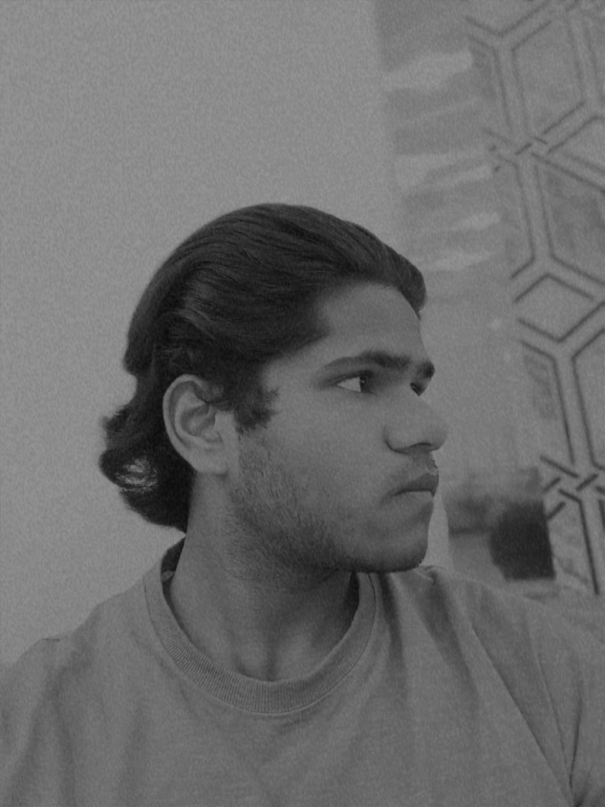

Welcome to My World!
Hi, I'm Arfaaz Pathan.
I'm an 18-year-old aspiring tech enthusiast currently pursuing a B.Tech in Information Technology from
Anangpuria Institute of Technology & Management, affiliated with YMCA University.
I'm passionate about technology, coding, and exploring innovative digital solutions. My goal is to become a
skilled software developer and contribute to the tech community by building meaningful projects that solve
real-world problems.
On this website, you'll find insights into my journey, my academic progress, the projects I’m working on,
and my
thoughts on tech trends. Whether you're a fellow student, a tech lover, or just someone curious—thank you
for
visiting!
🔍 What You’ll Find Here:
goals & achievements
to connect or collaborate with me
Let’s grow and learn together. Welcome once again!